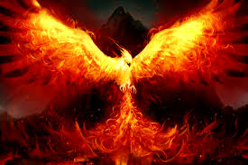

Se dice que en el Edén originario, debajo del Árbol del Bien y del Mal, floreció un arbusto de rosas. Allí, junto a la primera rosa, nació un pájaro, de bello plumaje y un canto incomparable, y cuyos principios le convirtieron en el único ser que no quiso probar las frutas del Árbol. Cuando Adán y Eva fueron expulsados del Paraíso, cayó sobre el nido una chispa de la espada de fuego de un Querubín, y el pájaro ardió al instante.
Pero, de las propias llamas, surgió una nueva ave, el Fénix, con un plumaje inigualable, alas de color escarlata y cuerpo dorado. Algunas fábulas lo sitúan posteriormente en Arabia, donde habitaba cerca de un pozo de aguas frescas y se bañaba todos los días entonando una melodía tan bella, que hacía que el Dios Sol detuviera su carro para escucharle.
La inmortalidad, fue el premio a su fidelidad al precepto divino, junto a otras cualidades como el conocimiento, la capacidad curativa de sus lágrimas, o su increíble fuerza. A lo largo de sus múltiples vidas, su misión es transmitir el saber que atesora desde su origen al pie del Árbol del Bien y del Mal, y servir de inspiración en sus trabajos a los buscadores del conocimiento, tanto artistas como científicos.
Su cronología vital varía con la adaptación del mito. Así, cada 100, 500, 540 (y en algunas leyendas, incluso 1461 ó 12994 años), construye una pira funeraria en su propio nido, la rellena de inciensos y plantas aromáticas, y al tiempo que entona la más bella de todas sus canciones, se prende a sí mismo hasta extinguirse. No existe más que una única ave, cuya forma de reproducción, es, precisamente, el renacimiento, del que también es símbolo.
El mito del Ave Fénix se extendió ampliamente entre los griegos, que le dieron el nombre de Phoenicoperus (que significa alas rojas), apelativo que se extendió por toda la Europa romana. Los primeros cristianos, influidos por los cultos helénicos, hicieron de esta singular criatura un símbolo viviente de la inmortalidad y de la resurrección. En la mitología del antiguo Egipto, el Ave Fénix representaba al Sol, que muere por la noche y renace por la mañana. Otro símbolo vinculado al Ave Fénix es el de la esperanza, que representa un valor que nunca debe morir en el hombre.
Según Ovidio, " cuando el Fénix ve llegar su final, construye un nido especial con ramas de roble y lo rellena con canela, nardos y mirra, en lo alto de una palmera. Allí se sitúa y, entonando la más sublime de sus melodías, expira. A los 3 días, de sus propias cenizas, surge un nuevo Fénix y, cuando es lo suficientemente fuerte, lleva el nido a Heliópolis, en Egipto, y lo deposita en el Templo del Sol ". Como el nuevo Fénix acumula todo el saber obtenido desde sus orígenes, un nuevo ciclo de inspiración comienza.
El Ave Fénix tiene sus representaciones en diferentes culturas, como la china (el Fêng-Huang), la japonesa (el Ho-oo), la rusa ( El Pájaro de Fuego , que inmortalizara musicalmente Stravinsky), la Egipcia (el Benu), la hindú (el Garuda), e incluso en los indios de norteamérica (el Yel), o los Aztecas, Mayas y Toltecas (el Quetzal). Fue citado por primera vez por Hesíodo en el siglo VIII A.C. y más tarde y con más detalle por el historiador Herodoto.